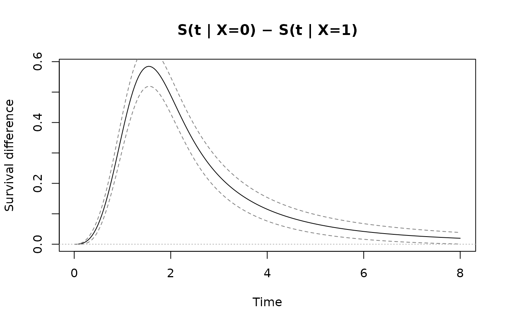
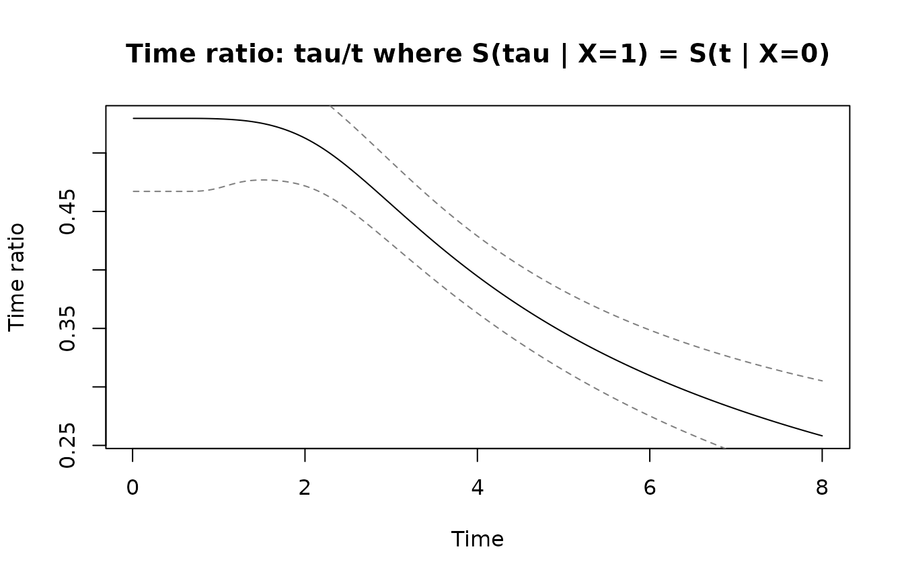
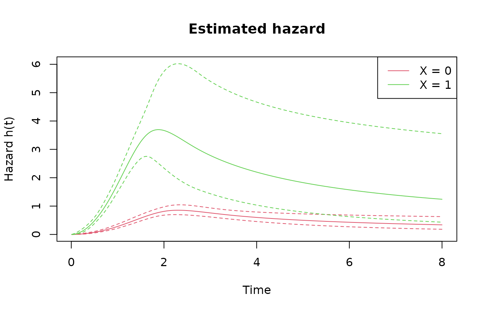
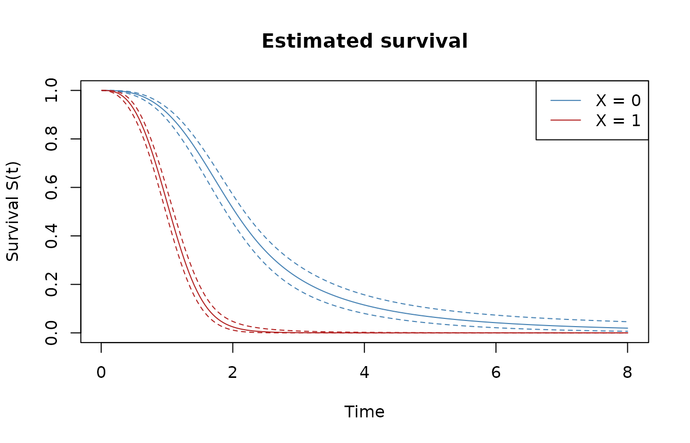
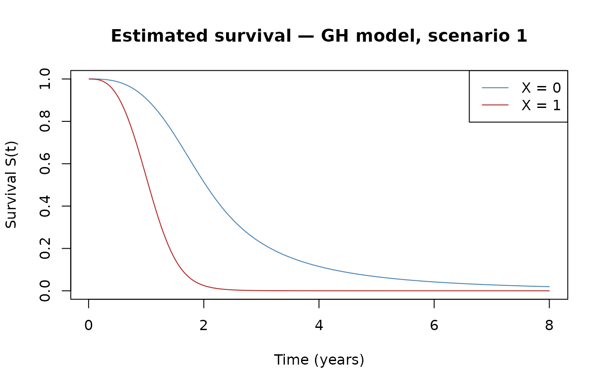
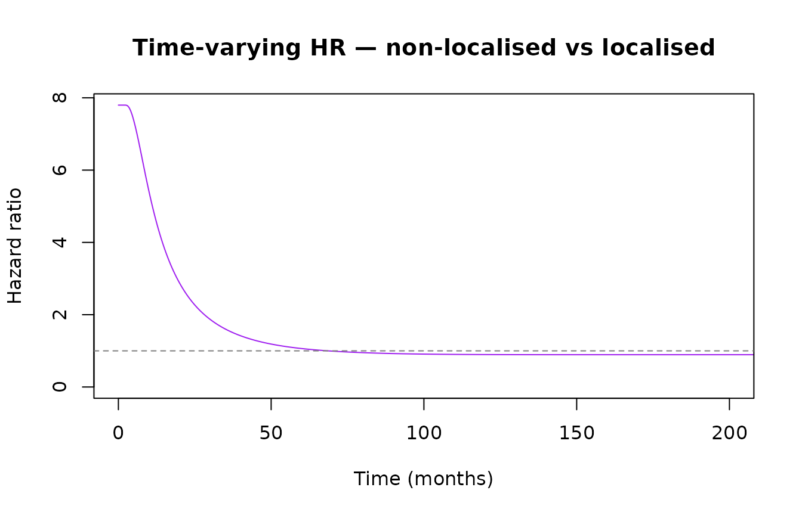

Introduction
In survival analysis, covariate effects are typically modelled through one of two mechanisms: a multiplicative effect on the hazard (proportional hazards, PH) or a multiplicative effect on time (accelerated failure time, AFT). Generalized hazard (GH) models combine both simultaneously:
This nests PH (), AFT (), and additive hazards (AH, ) as special cases. A key advantage: combining the time-acceleration parameter and the hazard-scaling parameter can capture time-varying hazard ratios with only two parameters per covariate.
genhaz fits penalised cubic restricted spline GH models
on the log-time scale, with the smoothing parameter selected
automatically by minimising a modified likelihood cross-validation (LCV)
criterion.
Model types
The model_type argument selects the sub-model per
covariate:
model_type |
Constraint | Interpretation |
|---|---|---|
"GH" |
none | Full generalised hazard |
"PH" |
Proportional hazards | |
"AFT" |
Accelerated failure time | |
"AH" |
Additive hazards |
Mixed models are supported via a vector,
e.g. model_type = c("PH", "GH") for two covariates.
Censoring types
Surv call |
Censoring | Internal type |
|---|---|---|
Surv(time, event) |
Right-censoring | "rc" |
Surv(start, stop, event) |
Left-truncation + right-censoring | "lt_rc" |
Surv(t1, t2, type="interval2") |
Interval censoring | "ic" |
Quick start
We simulate 500 observations from scenario 1 (bathtub-shaped baseline hazard) with and fit a GH model with automatic smoothing parameter selection.
library(genhaz)
library(survival)
set.seed(42)
dat <- sim_scenario(scenario = 1, beta1 = 0.5, beta2 = 0.5, n = 500)
head(dat)
#> time X event T_true
#> 1 1.5137723 1 1 1.5137723
#> 2 0.6274633 1 0 1.4308403
#> 3 1.9735251 0 1 1.9735251
#> 4 0.6619293 1 1 0.6619293
#> 5 1.5659811 1 1 1.5659811
#> 6 0.2222732 1 0 0.5267612
fit <- fit_genhaz(
surv = Surv(dat$time, dat$event),
formula = ~ X,
data = dat,
model_type = "GH",
profile = TRUE,
n_knots = 6,
tol_LCV = 0.05,
lcv_method = "optimize"
)Inspecting the fit
print() gives a concise overview: model metadata and a
coefficient table with Wald confidence intervals.
print(fit)
#> Fitted generalized hazard model (genhaz)
#>
#> Model type : GH
#> Knots : 6 (log-time scale)
#> Lambda : 362.7
#> EDF : 5.89
#> AIC : 877.97
#>
#> Covariate coefficients (Wald 95% CI):
#> Estimate Std.Err z p.value lower.95% upper.95%
#> beta1_X 0.2033 0.1521 1.3364 0.181419 -0.0949 0.5015
#> beta2_X 1.2617 0.3713 3.3983 0.000678 0.5340 1.9894summary() adds the stored formula, exponentiated
estimates, and a full CI table. exp(beta1) is the
time-acceleration factor; exp(beta2) is the hazard-scaling
factor.
summary(fit)
#> Fitted generalized hazard model (genhaz)
#>
#> Formula : ~X
#> Model type : GH
#> Knots : 6 (log-time scale)
#> Lambda : 362.7
#> EDF : 5.89
#> AIC : 877.97
#>
#> Covariate coefficients (Wald 95% CI):
#> Estimate Std.Err z p.value lower upper exp(Est.) exp(lower)
#> beta1_X 0.2033 0.1521 1.336 0.181419 -0.09487 0.5015 1.225 0.9095
#> beta2_X 1.2617 0.3713 3.398 0.000678 0.53401 1.9894 3.531 1.7058
#> exp(upper)
#> beta1_X 1.651
#> beta2_X 7.311The summary object can also be used programmatically:
s <- summary(fit)
s$coef_tab
#> Estimate Std.Err z p.value lower upper
#> beta1_X 0.2033293 0.1521473 1.336398 0.1814192329 -0.09487388 0.5015326
#> beta2_X 1.2617161 0.3712835 3.398255 0.0006781715 0.53401378 1.9894184
#> exp.Est exp.lower exp.upper
#> beta1_X 1.225476 0.9094876 1.65125
#> beta2_X 3.531477 1.7057652 7.31128Predictions
predict() accepts a data.frame of covariate
values (one row per group) and a time grid, and returns a long
data.frame with pointwise delta-method confidence
intervals. Row names of newdata become the group
labels.
t_grid <- seq(0.01, 8, length.out = 200)
nd <- data.frame(X = c(0, 1))
rownames(nd) <- c("X = 0", "X = 1")
pred_h <- predict(fit, newdata = nd, times = t_grid, type = "hazard")
head(pred_h)
#> pattern time estimate lower upper
#> 1 X = 0 0.01000000 4.160143e-05 4.277277e-06 0.0004046216
#> 2 X = 0 0.05015075 9.164835e-04 2.184886e-04 0.0038443294
#> 3 X = 0 0.09030151 2.831218e-03 9.135786e-04 0.0087740606
#> 4 X = 0 0.13045226 5.732711e-03 2.229556e-03 0.0147401406
#> 5 X = 0 0.17060302 9.590806e-03 4.264609e-03 0.0215690443
#> 6 X = 0 0.21075377 1.438436e-02 7.092434e-03 0.0291733137Survival and cumulative hazard are requested via
type:
pred_s <- predict(fit, newdata = nd, times = t_grid, type = "survival")
head(pred_s)
#> pattern time estimate lower upper
#> 1 X = 0 0.01000000 0.9999999 0.9999983 1.0000000
#> 2 X = 0 0.05015075 0.9999842 0.9999211 0.9999969
#> 3 X = 0 0.09030151 0.9999124 0.9996763 0.9999763
#> 4 X = 0 0.13045226 0.9997437 0.9992162 0.9999162
#> 5 X = 0 0.17060302 0.9994394 0.9985041 0.9997900
#> 6 X = 0 0.21075377 0.9989616 0.9975089 0.9995673Restricted mean survival time
type = "rmst" integrates the survival curve from 0 to
each restriction time
using 25-point Gauss-Legendre quadrature. Confidence intervals are
obtained via the delta method applied to the integral.
tau_grid <- c(2, 4, 6, 8)
rmst <- predict(fit, newdata = nd, times = tau_grid, type = "rmst")
rmst
#> pattern time estimate lower upper
#> 1 X = 0 2 1.700890 1.650400 1.751381
#> 2 X = 0 4 2.210935 2.079668 2.342201
#> 3 X = 0 6 2.351705 2.174575 2.528835
#> 4 X = 0 8 2.409497 2.202627 2.616366
#> 5 X = 1 2 1.062684 1.008257 1.117112
#> 6 X = 1 4 1.069942 1.012366 1.127517
#> 7 X = 1 6 1.069981 1.012366 1.127596
#> 8 X = 1 8 1.069981 1.012363 1.127599Between-group differences
type = "surv_diff" and type = "rmst_diff"
compare two covariate patterns (exactly two rows in
newdata). The gradient of the difference is propagated
through the shared parameter covariance matrix, so the estimator
accounts for the correlation between the two curves.
diff_s <- predict(fit, newdata = nd, times = t_grid, type = "surv_diff")
head(diff_s)
#> pattern time estimate lower upper
#> 1 X = 0 - X = 1 0.01000000 7.687261e-07 -1.020718e-06 2.558170e-06
#> 2 X = 0 - X = 1 0.05015075 8.492595e-05 -4.097166e-05 2.108236e-04
#> 3 X = 0 - X = 1 0.09030151 4.722709e-04 -8.320470e-05 1.027747e-03
#> 4 X = 0 - X = 1 0.13045226 1.380587e-03 1.967618e-05 2.741499e-03
#> 5 X = 0 - X = 1 0.17060302 3.017210e-03 4.595873e-04 5.574832e-03
#> 6 X = 0 - X = 1 0.21075377 5.580363e-03 1.452698e-03 9.708027e-03
plot(diff_s$time, diff_s$estimate, type = "l",
xlab = "Time", ylab = "Survival difference",
main = "S(t | X=0) − S(t | X=1)")
lines(diff_s$time, diff_s$lower, lty = 2, col = "grey50")
lines(diff_s$time, diff_s$upper, lty = 2, col = "grey50")
abline(h = 0, lty = 3, col = "grey70")
The RMST difference summarises the group contrast in a single number per restriction time:
rmst_diff <- predict(fit, newdata = nd, times = tau_grid, type = "rmst_diff")
rmst_diff
#> pattern time estimate lower upper
#> 1 X = 0 - X = 1 2 0.6382059 0.5651391 0.7112726
#> 2 X = 0 - X = 1 4 1.1409929 0.9980127 1.2839732
#> 3 X = 0 - X = 1 6 1.2817235 1.0957373 1.4677097
#> 4 X = 0 - X = 1 8 1.3395153 1.1250637 1.5539669type = "hazard_ratio" gives h1(t)/h2(t) — time-varying
since the model is GH (it would be constant under PH). The CI is on the
log scale.
hr <- predict(fit, newdata = nd, times = t_grid, type = "hazard_ratio")
plot(hr$time, hr$estimate, type = "l",
xlab = "Time", ylab = "Hazard ratio",
main = "h(t | X=0) / h(t | X=1)")
lines(hr$time, hr$lower, lty = 2, col = "grey50")
lines(hr$time, hr$upper, lty = 2, col = "grey50")
abline(h = 1, lty = 3, col = "grey70")type = "time_ratio" gives TR(t) = tau/t where S2(tau) =
S1(t): for each time t, how many multiples of t does group 2 need to
reach the same survival level. Computed via uniroot per
time point with a delta-method CI.
tr <- predict(fit, newdata = nd, times = t_grid, type = "time_ratio")
plot(tr$time, tr$estimate, type = "l",
xlab = "Time", ylab = "Time ratio",
main = "Time ratio: tau/t where S(tau | X=1) = S(t | X=0)")
lines(tr$time, tr$lower, lty = 2, col = "grey50")
lines(tr$time, tr$upper, lty = 2, col = "grey50")
abline(h = 1, lty = 3, col = "grey70")
Plotting
plot() draws all groups as coloured lines with dashed
confidence bands. Row names of newdata appear in the
legend.
plot(fit, newdata = nd, times = t_grid)

Pass additional graphical parameters directly through
...:
plot(fit, newdata = nd, times = t_grid, type = "survival",
col = c("steelblue", "firebrick"),
main = "Estimated survival — GH model, scenario 1",
xlab = "Time (years)",
ci = FALSE)
Inference
Wald confidence intervals
waldCI() computes a Wald CI for a single parameter;
waldCI_minus() provides a CI for the difference
(accounting for their covariance via the delta method).
waldCI(fit, "beta1_X")
#> lower upper
#> -0.09487388 0.50153255
waldCI(fit, "beta2_X")
#> lower upper
#> 0.5340138 1.9894184
waldCI_minus(fit, "beta1_X", "beta2_X")
#> lower upper
#> -2.07437271 -0.04240081Likelihood ratio test
Fit a restricted (PH) model and test against the full GH model:
fit_ph <- fit_genhaz(
surv = Surv(dat$time, dat$event),
formula = ~ X,
data = dat,
model_type = "PH",
profile = TRUE,
n_knots = 6,
tol_LCV = 0.05,
lcv_method = "optimize"
)
LR(fit_ph, fit)
#> LR-statistic p_value
#> 5.68044586 0.01715501Real-data example: melanoma survival
We use the biostat3::melanoma dataset: 7,775 patients
with melanoma cancer, including age group, period of diagnosis, sex,
cancer stage, survival time in months, and a death indicator. The
question of interest is the effect of non-localised stage on survival,
adjusted for age, period, and sex.
Fitting the model
The full model fit takes approximately ~9 min and is not re-run here. The code below shows exactly what was run to produce the stored result:
fit_melanoma <- fit_genhaz(
Surv(mel$time, mel$event), ~ X + period + agegrp + sex,
data = mel,
model_type = "GH",
profile = TRUE,
n_knots = 8,
tol_LCV = 0.001,
lcv_method = "optimize"
)
data("fit_melanoma")Results
print(fit_melanoma)
#> Fitted generalized hazard model (genhaz)
#>
#> Model type : GH
#> Knots : 8 (log-time scale)
#> Lambda : 5970
#> EDF : 15.80
#> AIC : 24261.08
#>
#> Covariate coefficients (Wald 95% CI):
#> Estimate Std.Err z p.value lower.95% upper.95%
#> beta1_X 1.1428 0.0857 13.3398 < 2e-16 0.9749 1.3107
#> beta1_period -0.0711 0.0763 -0.9317 0.35150 -0.2208 0.0785
#> beta1_agegrp45-59 0.0764 0.1020 0.7492 0.45371 -0.1235 0.2764
#> beta1_agegrp60-74 0.1117 0.1002 1.1146 0.26504 -0.0847 0.3081
#> beta1_agegrp75+ 0.2973 0.1190 2.4982 0.01248 0.0641 0.5306
#> beta1_sexFemale -0.1150 0.0738 -1.5576 0.11933 -0.2597 0.0297
#> beta2_X 0.3055 0.0695 4.3925 1.12e-05 0.1692 0.4418
#> beta2_period -0.3054 0.0655 -4.6637 3.11e-06 -0.4338 -0.1771
#> beta2_agegrp45-59 0.2457 0.0837 2.9358 0.00333 0.0817 0.4098
#> beta2_agegrp60-74 0.5377 0.0821 6.5507 5.73e-11 0.3768 0.6985
#> beta2_agegrp75+ 0.8283 0.0997 8.3072 < 2e-16 0.6329 1.0238
#> beta2_sexFemale -0.4238 0.0609 -6.9558 3.51e-12 -0.5432 -0.3044
summary(fit_melanoma)
#> Fitted generalized hazard model (genhaz)
#>
#> Formula : ~X + period + agegrp + sex
#> Model type : GH
#> Knots : 8 (log-time scale)
#> Lambda : 5970
#> EDF : 15.80
#> AIC : 24261.08
#>
#> Covariate coefficients (Wald 95% CI):
#> Estimate Std.Err z p.value lower upper exp(Est.)
#> beta1_X 1.14275 0.08566 13.3398 < 2e-16 0.97485 1.31065 3.1354
#> beta1_period -0.07113 0.07634 -0.9317 0.35150 -0.22076 0.07850 0.9313
#> beta1_agegrp45-59 0.07644 0.10202 0.7492 0.45371 -0.12351 0.27638 1.0794
#> beta1_agegrp60-74 0.11169 0.10021 1.1146 0.26504 -0.08472 0.30809 1.1182
#> beta1_agegrp75+ 0.29734 0.11902 2.4982 0.01248 0.06406 0.53061 1.3463
#> beta1_sexFemale -0.11502 0.07384 -1.5576 0.11933 -0.25975 0.02971 0.8913
#> beta2_X 0.30549 0.06955 4.3925 1.12e-05 0.16918 0.44180 1.3573
#> beta2_period -0.30543 0.06549 -4.6637 3.11e-06 -0.43378 -0.17707 0.7368
#> beta2_agegrp45-59 0.24573 0.08370 2.9358 0.00333 0.08168 0.40978 1.2786
#> beta2_agegrp60-74 0.53765 0.08208 6.5507 5.73e-11 0.37679 0.69852 1.7120
#> beta2_agegrp75+ 0.82835 0.09971 8.3072 < 2e-16 0.63291 1.02378 2.2895
#> beta2_sexFemale -0.42383 0.06093 -6.9558 3.51e-12 -0.54325 -0.30440 0.6545
#> exp(lower) exp(upper)
#> beta1_X 2.6508 3.7086
#> beta1_period 0.8019 1.0817
#> beta1_agegrp45-59 0.8838 1.3184
#> beta1_agegrp60-74 0.9188 1.3608
#> beta1_agegrp75+ 1.0662 1.7000
#> beta1_sexFemale 0.7712 1.0302
#> beta2_X 1.1843 1.5555
#> beta2_period 0.6481 0.8377
#> beta2_agegrp45-59 1.0851 1.5065
#> beta2_agegrp60-74 1.4576 2.0108
#> beta2_agegrp75+ 1.8831 2.7837
#> beta2_sexFemale 0.5809 0.7376Patients with non-localised disease progress through the baseline hazard times faster and face a times higher hazard at every time point. Wald CIs for each:
Hazard and survival curves
We evaluate at age group 60–74, male sex, diagnosed 1985–94 (the adjusted covariate vector in design-matrix order: X, period, agegrp60-74, sex Male).
new_time <- seq(0, 320, by = 0.5)
CIs_loc <- CI(fit_melanoma, new_time, c(0, 1, 0, 1, 0, 0), alpha = 0.05)
CIs_nonloc <- CI(fit_melanoma, new_time, c(1, 1, 0, 1, 0, 0), alpha = 0.05)
ylim_h <- range(c(CIs_loc$lower_h, CIs_nonloc$upper_h), na.rm = TRUE)
plot(CIs_loc$time, CIs_loc$h, type = "l", col = "steelblue",
ylim = ylim_h, xlab = "Time (months)", ylab = "Hazard",
main = "Estimated hazard — melanoma, GH model")
lines(CIs_loc$time, CIs_loc$lower_h, col = "steelblue", lty = 2)
lines(CIs_loc$time, CIs_loc$upper_h, col = "steelblue", lty = 2)
lines(CIs_nonloc$time, CIs_nonloc$h, col = "firebrick")
lines(CIs_nonloc$time, CIs_nonloc$lower_h, col = "firebrick", lty = 2)
lines(CIs_nonloc$time, CIs_nonloc$upper_h, col = "firebrick", lty = 2)
legend("topright", c("Localised", "Non-localised"),
col = c("steelblue", "firebrick"), lty = 1)
plot(CIs_loc$time, CIs_loc$S, type = "l", col = "steelblue",
ylim = c(0, 1), xlab = "Time (months)", ylab = "Survival",
main = "Estimated survival — melanoma, GH model")
lines(CIs_loc$time, CIs_loc$lower_S, col = "steelblue", lty = 2)
lines(CIs_loc$time, CIs_loc$upper_S, col = "steelblue", lty = 2)
lines(CIs_nonloc$time, CIs_nonloc$S, col = "firebrick")
lines(CIs_nonloc$time, CIs_nonloc$lower_S, col = "firebrick", lty = 2)
lines(CIs_nonloc$time, CIs_nonloc$upper_S, col = "firebrick", lty = 2)
legend("topright", c("Localised", "Non-localised"),
col = c("steelblue", "firebrick"), lty = 1)
Time-varying hazard ratio
hr <- CIs_nonloc$h / CIs_loc$h
plot(new_time, hr, type = "l", col = "purple",
xlim = c(0, 200), ylim = c(0, max(hr[new_time <= 200], na.rm = TRUE)),
xlab = "Time (months)", ylab = "Hazard ratio",
main = "Time-varying HR — non-localised vs localised")
abline(h = 1, lty = 2, col = "grey50")
With only two parameters for the stage effect, the GH model captures the time-varying hazard ratio: high at diagnosis, levelling off after approximately 6 years. This can be compared using survPen.
RMST and survival difference
predict() supports type = "surv_diff" and
type = "rmst_diff" for any fitted model. The code below
illustrates the pattern; factor levels for agegrp and
sex must match those used during fitting (i.e. those in
mel).
mel <- biostat3::melanoma
mel$X <- ifelse(mel$stage == "Localised", 0, 1)
mel$period <- ifelse(mel$year8594 == "Diagnosed 75-84", 0, 1)
nd_mel <- data.frame(
X = c(0L, 1L),
period = c(1L, 1L),
agegrp = factor(c("60-74", "60-74"), levels = levels(mel$agegrp)),
sex = factor(c("Male", "Male"), levels = levels(mel$sex))
)
rownames(nd_mel) <- c("Localised", "Non-localised")
# Survival difference S(t | Localised) - S(t | Non-localised)
diff_s_mel <- predict(fit_melanoma, newdata = nd_mel,
times = new_time, type = "surv_diff")
plot(diff_s_mel$time, diff_s_mel$estimate, type = "l",
xlab = "Time (months)", ylab = "Survival difference",
main = "S(t | Localised) − S(t | Non-localised)")
lines(diff_s_mel$time, diff_s_mel$lower, lty = 2, col = "grey50")
lines(diff_s_mel$time, diff_s_mel$upper, lty = 2, col = "grey50")
abline(h = 0, lty = 3, col = "grey70")
# RMST difference at 1, 2, 5, 10, 20 years (months)
tau_mel <- c(12, 24, 60, 120, 240)
rmst_mel <- predict(fit_melanoma, newdata = nd_mel,
times = tau_mel, type = "rmst_diff")
rmst_melSmoothing-parameter selection
The smoothing parameter
is chosen by minimising the modified LCV criterion. Three strategies are
available via lcv_method:
lcv_method |
Method | Notes |
|---|---|---|
"full" (default) |
Root-find on full LCV gradient (third-derivative correction) | Most accurate |
"approx" |
Root-find on first-order LCV gradient | Faster |
"optimize" |
Direct optimize() on LCV, no gradient |
Gradient-free |
# First-order gradient (faster)
fit <- fit_genhaz(..., profile = TRUE, lcv_method = "approx")
# Pure optimisation (no gradient)
fit <- fit_genhaz(..., profile = TRUE, lcv_method = "optimize")